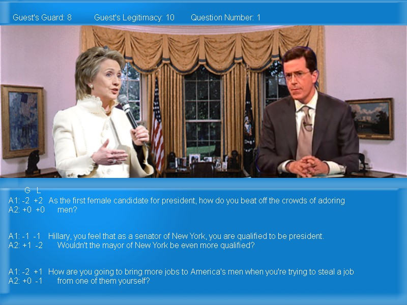

Stephen Colbert's Battle Of Wits (2008)

Authors
Steven Jones, Andrew Pinson, Mohammad Dar
Description
A game where you interview candidates as Stephen Colbert.
Downloads
Compatibility notes.
Confirmed working on Windows 10. This is a fixed version containing OpenAL-Soft.